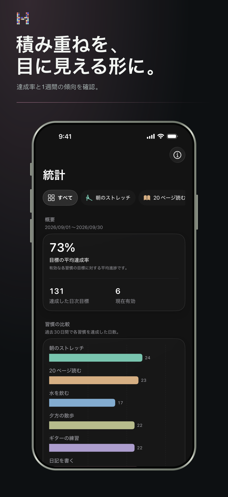
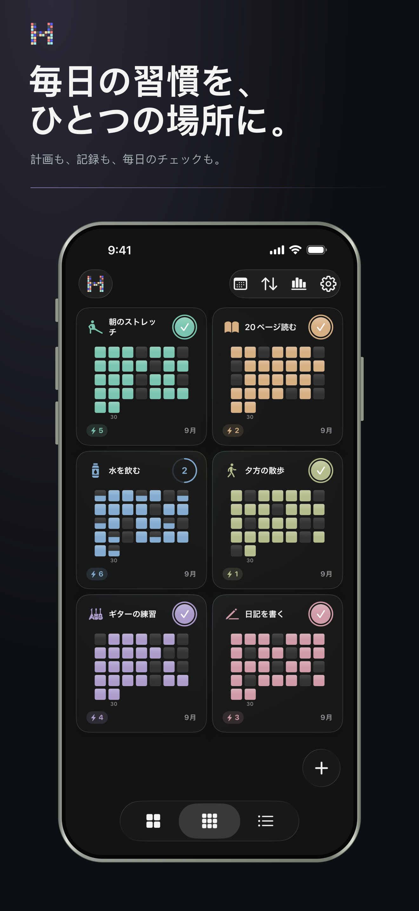
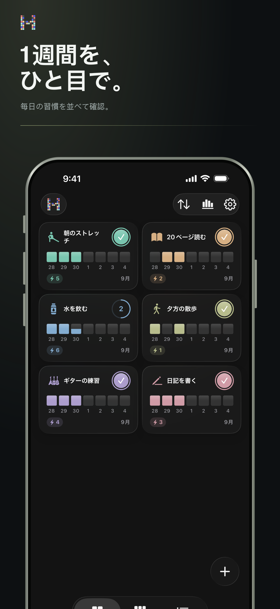

プレッシャーより、パターン
続けられた理由を知る。
ルーティンを表計算に変えることなく、連続記録、達成率、長期的な傾向を確認できます。
- 現在と最長の連続記録
- 達成率の推移と分布
- 週間・月間・年間の振り返り
iPhoneのためのHabitBit
余計なものに邪魔されず、毎日の習慣を育てましょう。ワンタップで記録し、1週間、1か月、1年を通したルーティン、連続記録、進捗を見渡せます。
App StoreからApp Storeアカウントは不要です。習慣データは端末内に保存されます。
HabitBitの考え方
モチベーションは形に残りません。でも、毎日の印があれば、自分の進歩を信じやすくなります。

また戻りたくなる設計。
ひとつの習慣。3つの視点。
今週
集中できる週間ボードで今日を身近に保ちながら、積み上がるリズムも見失いません。

継続のための視覚的な仕組み
HabitBitはiPhone向けのシンプルな習慣トラッカー・ルーティン管理アプリです。ワンタップの記録を週間・月間・年間グリッドに変え、日常を複雑にせずに連続記録と目標管理を続けられます。
続けたいルーティンごとに、名前、アイコン、色、スケジュール、必要に応じてリマインダーを設定します。
習慣をワンタップで完了。ひとつひとつの達成が、見える履歴のマスになります。
週間・月間・年間表示を切り替え、連続記録、できなかった日、長期的な継続を振り返れます。
最初からプライベート
はじめる前に
HabitBitはiPhone向けのシンプルで視覚的な習慣トラッカー・ルーティン管理アプリです。毎日のチェックが週間・月間・年間グリッドになり、ルーティン、連続記録、長期的な進捗をひと目で確認できます。
いいえ。アカウントを作らずに習慣管理を始められます。習慣データは端末内に保存されます。
運動、読書、水分補給、勉強、マインドフルネスなど、繰り返したい行動を毎日の習慣、連続記録、目標、ルーティンとして管理できます。習慣ごとにアイコン、色、スケジュール、リマインダーを設定できます。
はい。ホーム画面とロック画面のウィジェット、指定した日時のリマインダー、ポモドーロ式の集中タイマーを利用できます。
HabitBitは無料でダウンロードして利用できます。任意のPro購入で、無制限の習慣、高度な統計、Proウィジェット、ファイルの書き出し・読み込み、追加テーマカラーを利用できます。プランと地域別価格はアプリ内に表示されます。
App Storeの初期レビュー
「毎日のルーティンを続ける助けになります。素晴らしいです。」
「生活を楽にしてくれるアプリです。ありがとう。」
「最初からこんな結果になるとは思いませんでした！」
App Storeに公開された確認済みレビューです。